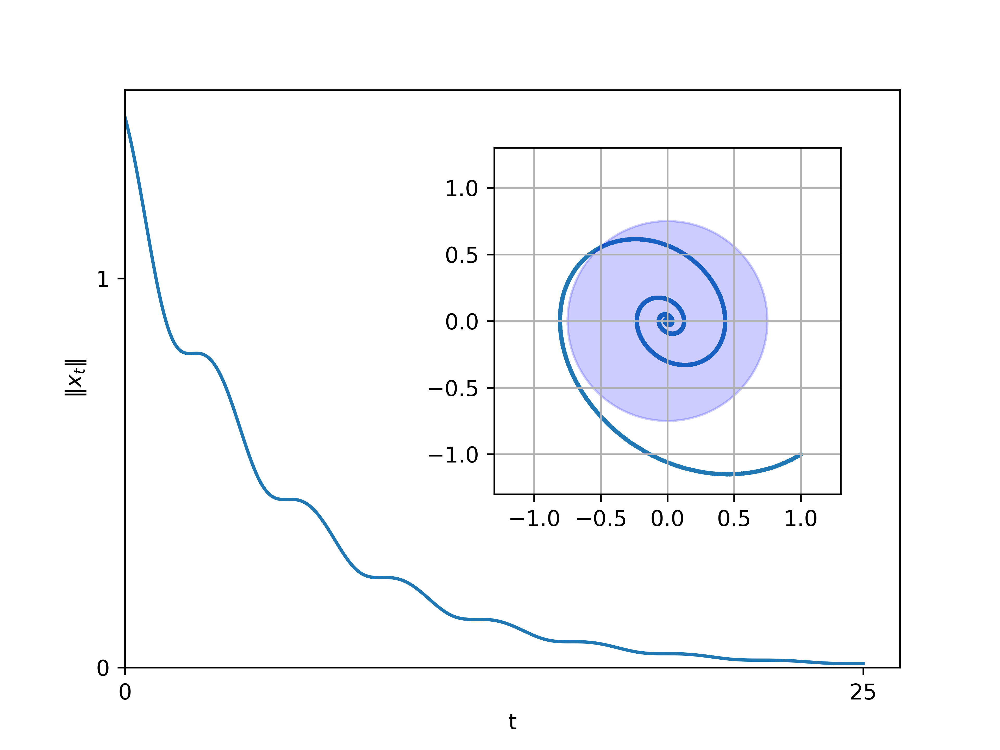
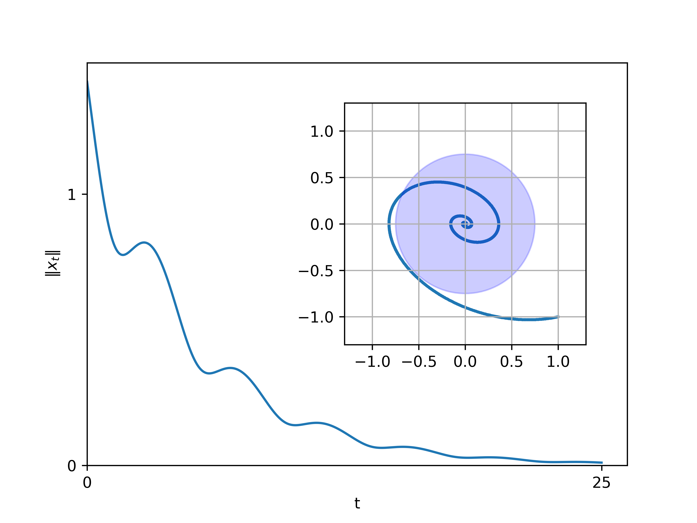
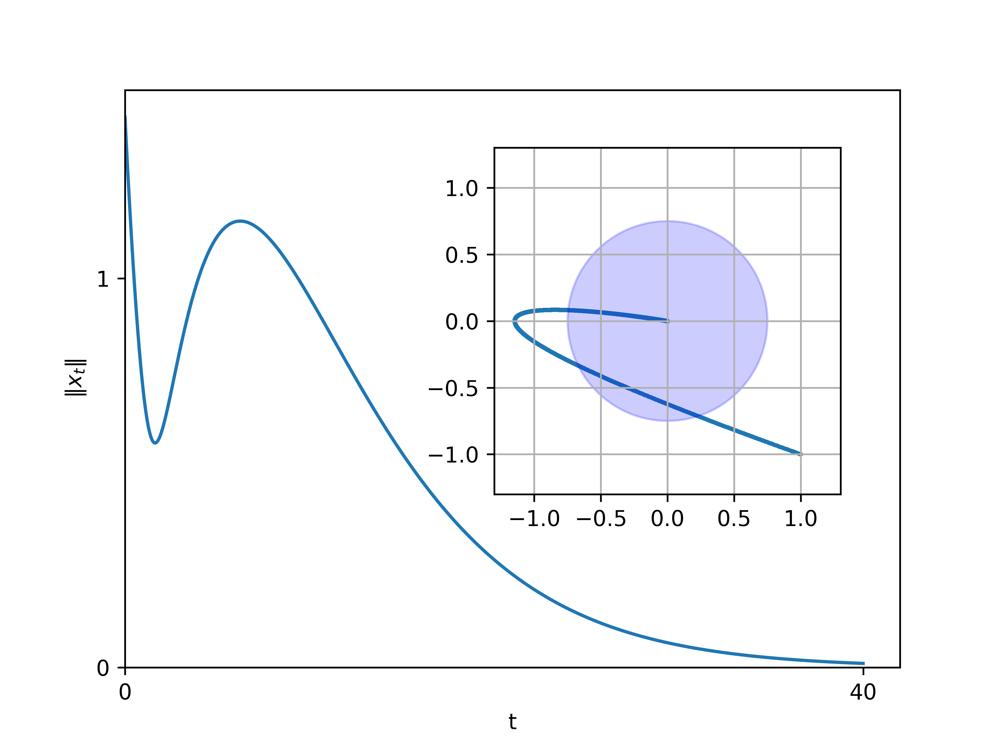
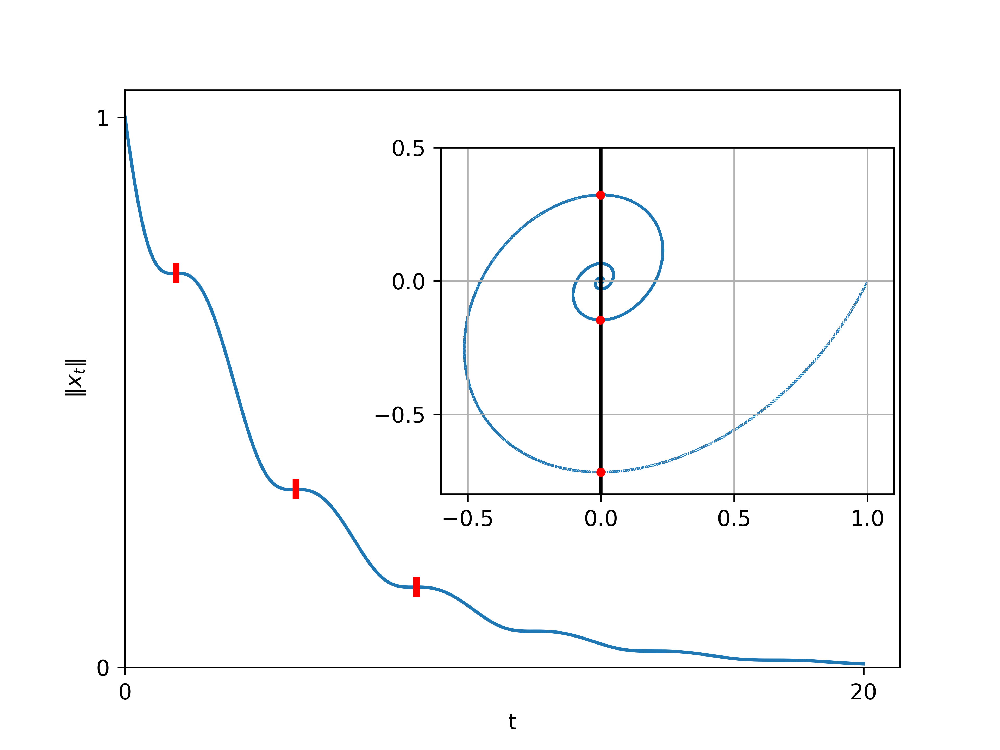

Coercivity
Let us call a matrix \(M \in \mathbb{R}^{d \times d}\) coercive if there exists a constant \(\alpha>0\) such that \(\forall x \in \mathbb{R}^d, x^\top M x \geq \alpha \|x\|^2\) (where \(\|x\|\) denotes the Euclidean norm). This definition is consistent with the other uses of the term “coercive” in mathematics:
a function \(F: \mathbb{R}^d \to \mathbb{R}\) is called coercive iff all its sublevel sets \(\left\{ x; F(x) \leq v \right\}\) (for \(v \in \mathbb{R}\)) are compact;
a vector field \(f: \mathbb{R}^d \to \mathbb{R}^d\) is called coercive iff \(x^\top f(x) \geq \omega(\|x\|)\) as \(\|x\| \to \infty\). So coercivity for a matrix \(M\) is like a quantitative version of the coercivity for the vector field \(x \mapsto M x\).
The notion of coercive matrix dates back to the 1950s, with the foundational paper “Parabolic Equations” (Lax and Milgram 1954). 1
1 The original paper by Lax and Milgram didn’t actually use the term “coercive”; I wasn’t able to track down its first use. By the way, in Lax and Milgram’s work and in subsequent works on PDEs, coercivity is defined as a property of a bilinear form. This is equivalent to our definition since a matrix \(M\) can be canonically associated to a bilinear form \(a: \mathbb{R}^d \times \mathbb{R}^d \to \mathbb{R}\) by \(a(x, y) = x^\top M y\).
Lax and Milgram’s original motivation was to study the well-posedness of a linear PDE; let us be a bit more modest and study the behavior of the linear ODE \(\dot{x}_t = -M x_t\). Observe that \[\frac{d}{dt} \|x_t\|^2 = 2 x_t^\top \dot{x}_t = -2 x_t^\top M x_t \leq -2\alpha \|x_t\|^2,\] and so, by Gronwall’s lemma, \(\|x_t\|^2 \leq e^{-2\alpha t} \|x_0\|^2 \to 0\) as \(t \to \infty\). This explains the choice of the term for this notion: the linear dynamical system associated to a coercive \(M\) “coerces” \(x_t\) into converging to \(0\).
Note that we did not ask for \(M\) to be symmetric! But also note that the definition of coercivity only involves the symmetric part of \(M\), since \(x^\top M x = x^\top \frac{M+M^\top}{2} x\). So, \(M\) is coercive if and only if its symmetric part is coercive. In turn, coercivity for a symmetric matrix can be characterized in terms of its eigenvalues, thanks to the spectral theorem.
This short discussion shows that coercivity has several characterizations, summarized in the next proposition. The proof is left as an exercise.
Proposition 1 The following statements are equivalent for any \(\alpha>0\):
\(\forall x, x^\top M x \geq \alpha \|x\|^2\).
For any \(x_0\), the ODE \(\dot{x}_t = -M x_t\) satisfies \(\forall t, \|x_t\|^2 \leq e^{-2\alpha t} \|x_0\|^2\).
The eigenvalues of the symmetric part of \(M\) belong to \(\left\{ \lambda \in \mathbb{R}; \lambda \geq \alpha \right\}\).
Hypocoercivity
Coercivity of \(M\) is a sufficient condition for the linear dynamical system \[\dot{x}_t = -M x_t \tag{1}\] to converge exponentially to \(0\), for any initialization \(x_0 \in \mathbb{R}^d\). But it is not a necessary condition. And indeed, there are many linear systems of interest in applied mathematics which converge to \(0\) but which are not coercive. This motivates the definition:
Definition 1 We call a matrix \(M \in \mathbb{R}^{d \times d}\) hypocoercive if the linear dynamical system (Eq. 1) converges to \(0\) exponentially, i.e., if there exists a constant \(\alpha>0\) such that \[\exists C<\infty, \forall x_0 \in \mathbb{R}^d, \|x_t\| \leq C e^{-\alpha t} \|x_0\|.\]
Remark 1. The term “hypocoercive” was popularized in the 2006 memoir by Cédric Villani audaciously titled simply “Hypocoercivity”. 2 The existence of hypocoercive matrices which are not coercive was well-known before that, of course, even though there was no particular name for it, and this phenomenon was already more or less well-understood in finite dimension. Villani’s contributions were about studying the same phenomenon for linear PDEs. For this reason, googling “hypocoercivity” almost only returns works about PDEs.
2 Yes, this is the same Cédric Villani who also did amazing work on optimal transport. Yes, hypocoercivity and optimal transport are completely different topics.
To be clear, this blog post is only about hypocoercivity in finite dimension. This is because there are already a number of strange and fun things that can be said. Plus, there are some phenomena that occur in finite dimension which do not occur for PDEs, and vice-versa. (A third reason is that I don’t know nearly enough yet about hypocoercivity in PDEs to actually write about it.)
Here is a first example of a matrix which is hypocoercive but not coercive: in dimension \(d=2\), \(M = \begin{pmatrix} 0 & -1 \\ 1 & \varepsilon \end{pmatrix}\), where \(0<\varepsilon<2\). \(M\) is not coercive since its symmetric part has a zero eigenvalue. To prove that \(M\) is hypocoercive, the brute-force solution is to diagonalize it in \(\mathbb{C}^2\) and to decompose the ODE (Eq. 1) in its eigenbasis: we have \[M = P \begin{pmatrix} \lambda_+ & ~ \\ ~ & \lambda_- \end{pmatrix} P^{-1} ~~~~\text{where}~~~~ \lambda_\pm = \frac{\varepsilon}{2} + i \sqrt{1 - \frac{\varepsilon^2}{2}}\] for some invertible \(P \in \mathbb{C}^{2 \times 2}\). So we can rewrite (Eq. 1) as \[P^{-1} \dot{x}_t = -\begin{pmatrix} \lambda_+ & ~ \\ ~ & \lambda_- \end{pmatrix} P^{-1} x_t, ~~~~\text{so}~~ \frac{d}{dt} \| P^{-1} x_t \|^2 \leq -\varepsilon\| P^{-1} x_t \|^2\] and so \(\|x_t\| \leq \| P \|_{\mathrm{op}} \| P^{-1} x_t \| \leq e^{-\varepsilon t/2} \| P \|_{\mathrm{op}} \| P^{-1} x_0 \| \leq e^{-\varepsilon t/2} \| P \|_{\mathrm{op}} \| P^{-1} \|_{\mathrm{op}} \|x_0\|\).
Using the same brute-force method as in this example, one can show the following characterization in terms of \(M\)’s eigenvalues. 3 This is a very well-known result, and the quantity \(\alpha(M)\) is also called the spectral abscissa of \(-M\).
3 In order to complete the proof, one needs to deal with the case where \(M\) is not diagonalizable. This can be done, for example, thanks to the nifty construction in this MSE post (“Matrix norm and spectral radius”) based on the Jordan normal form.
Proposition 2 \(M\) is hypocoercive, with a constant \(\alpha\), if and only if all of its eigenvalues belong to \(\left\{ \lambda \in \mathbb{C}; \Re(\lambda) \geq \alpha \right\}\).
Accordingly, the optimal hypocoercivity constant of \(M\) is \[\alpha(M) = \min_{\lambda \in \mathrm{Sp}(M)} \Re(\lambda),\] where \(\mathrm{Sp}(M)\) denotes the set of eigenvalues.
An example with a non-PSD symmetric part.
Starting from the next section, we will be considering matrices \(M \in \mathbb{R}^{d \times d}\) for which we know a priori that the symmetric part is positive-semi-definite. This is not a sufficient condition for hypocoercivity, as shown by the example \(M=\begin{pmatrix} 0 & -1 \\ 1 & \varepsilon \end{pmatrix}\). It turns out that it is not a necessary condition either: consider for example \[M = \begin{pmatrix} 0 & -1 \\ \lambda & \varepsilon \end{pmatrix},~~~~ \text{so}~~ 2S \coloneqq M+M^\top = \begin{pmatrix} 0 & \lambda-1 \\ \lambda-1 & 2\varepsilon \end{pmatrix}\] for any \(0<\lambda\neq 1\) and \(\varepsilon= 2\sqrt{\lambda}\). One can show, by diagonalizing it, that \(M\) is hypocoercive. On the other hand the determinant of \(S\) is \(-\frac{1}{4} (\lambda-1)^2 < 0\), so \(S\) is not positive-semi-definite.


The case with a PSD symmetric part
For the rest of this blog post, let us consider a matrix \(M \in \mathbb{R}^{d \times d}\) for which we know a priori that the symmetric part \(S \coloneqq \frac{M+M^\top}{2}\) is positive-semi-definite (PSD), i.e., \(\mathrm{Sp}(S) \subset \mathbb{R}_+\). This is a pretty natural assumption, considering that coercivity of \(M\) implies \(S\) is positive-definite, and it is satisfied for all of the concrete examples I know of in optimization.
Under what additional conditions is \(M\) hypocoercive? The following result is well-known in control theory; the condition \((ii)\) is called Kawashima’s non-degeneracy condition. 4
4 As a disclaimer, I don’t know much about control theory; the claim that Proposition 3 is classical is repeated from (Achleitner et al. 2022), and the claim that the condition \((ii)\) is called Kawashima’s condition is repeated from (Villani 2009 Remark 17).
Proposition 3 Let \(M = S + A \in \mathbb{R}^{d \times d}\), with \(S\) symmetric and \(A\) antisymmetric. Suppose \(S\) is positive-semi-definite. Then the following conditions are equivalent:
\(M\) is hypocoercive.
No eigenvector of \(A\) lies in the kernel of \(S\).
There exists \(N \in \mathbb{N}\) such that \(\bigcap_{n \leq N} \mathop{\mathrm{Ker}}(S A^n) = \{0\}\).
A short proof of \((i) \iff (ii)\) can be found in (Wang and Chizat 2023). For \((i) \iff (iii)\), unfortunately I don’t know of a short self-contained source, and the proof that I know is a bit long. I included a proof sketch in the foootnotes. 5
5 Here is a proof sketch for the equivalence \((i) \iff (iii)\) of Proposition 3. One can show by induction that \(\mathcal{K}_N \coloneqq \bigcap_{n \leq N} \mathop{\mathrm{Ker}}(S A^n)\) \(= \bigcap_{n \leq N+1} \mathop{\mathrm{Ker}}(M^n - A^n).\) One can also show that \(\mathcal{K}_\infty \coloneqq \bigcap_n \mathop{\mathrm{Ker}}(M^n - A^n)\) \(= \bigcap_{t \in \mathbb{R}} \mathop{\mathrm{Ker}}(e^{-tM} - e^{-tA})\) \(= \mathrm{span}\big( \mathop{\mathrm{Ker}}(S) \cap \mathrm{Eigvecs}(A) \big)\) where \(\mathrm{Eigvecs}(A)\) is the set of all eigenvectors of \(A\) and \(\mathrm{span}(\cdot)\) denotes the linear span (for the second equality, consider the decomposition of \(x \in \mathcal{K}_\infty\) in the unitary eigenbasis of \(A\)). To conclude, note that \((\dim \mathcal{K}_N)_{N \in \mathbb{N}}\) is finite, integer, non-increasing, and so there exists \(N\) such that \(\mathcal{K}_N = \mathcal{K}_\infty\).
For some intuition on Kawashima’s condition \((ii)\), consider the example \(S = \begin{pmatrix} 1 & 0 \\ 0 & 0 \end{pmatrix}\), \(% ~~~~ A = \begin{pmatrix} 0 & 1 \\ -1 & 0 \end{pmatrix},\) and let us think about the convergence of the dynamical system \(\dot{x}_t = -(S+A) x_t\). It can be seen as a combination of
the system \(\dot{x}_t = -S x_t % \iff % \begin{pmatrix} % \dot{x}_t[1] \\ % \dot{x}_t[2] % \end{pmatrix} % = \begin{pmatrix} % 0 \\ % -x_t[2] % \end{pmatrix} \iff \begin{pmatrix} x_t[1] \\ x_t[2] \end{pmatrix} = \begin{pmatrix} e^{-t} x_0[1] \\ ~~~x_0[2] \end{pmatrix}\), which converges to kernel of \(S\) which is the \(y\)-axis, and
the system \(\dot{x}_t = -A x_t\) whose solution is given by \(z_t = e^{-it} z_0\) where \(z_t = x_t[1] + i x_t[2]\)—in other words, the system simply rotates around the origin.
So for the full dynamical system \(\dot{x}_t = -(S+A) x_t\), the \(S\) term forces \(x_t\) towards the \(y\)-axis, and the \(A\) term forces \(x_t\) to “keep moving” even if it already lies on the \(y\)-axis—unless it is precisely at \(0\).
More generally in higher dimensions, the system \(\dot{x}_t = -A x_t\) rotates around the origin along each eigenplane of \(A\) orthonormally. Under Kawashima’s non-degeneracy condition, the same phenomenon as in the example above will occur: the \(A\) term will prevent the system from staying put at some \(x \in \mathop{\mathrm{Ker}}S \setminus \{0\}\). The only way that this can fail is if there is an eigenplane of \(A\) which is contained in \(\mathop{\mathrm{Ker}}S\); in this case the system will just rotate indefinitely within that subspace, without going to \(0\).

As for the condition \((iii)\)... I honestly have no intuition about it.
Remark 2. The set of hypocoercive matrices contains the set of coercive matrices, by definition. How much bigger is it?
The set of coercive matrices can be described as \(\mathop{\mathrm{Sym}}^{++}_n \oplus \mathrm{Antisym}_n\), where \(\mathop{\mathrm{Sym}}^{++}_n\) is the set of positive-definite matrices and \(\mathrm{Antisym}_n\) the set of antisymmetric matrices.
The set of hypocoercive matrices “almost” contains \(\mathop{\mathrm{Sym}}^{+}_n \oplus \mathrm{Antisym}_n\), where \(\mathop{\mathrm{Sym}}^+_n\) is the set of PSD matrices. Indeed, for a fixed \(S \in \mathop{\mathrm{Sym}}^+_n\), Kawashima’s condition is satisfied for almost every \(A \in \mathrm{Antisym}_n\).
On top of that, the set of hypocoercive matrices also contains some matrices with a non-PSD symmetric part.
How to get a convergence rate?
Suppose we’re interested in a dynamical system which can be modeled as a linear ODE of the form \(\dot{x}_t = -M x_t\). Furthermore, suppose we know that \(M\) is hypocoercive and has a PSD symmetric part, and we would like know how fast this linear system converges to \(0\). (We will see concrete examples of such settings in the next blog post.)
Given the characterization in Proposition 2, we know that the convergence is exponential: \(\|x_t\| = O(e^{-\alpha(M) t})\), and that the rate is given by \(\alpha(M) = \min_{\lambda \in \mathrm{Sp}(M)} \Re(\lambda)\). So the question is really: how can we estimate this quantity, as a function of problem parameters? This question is setting-dependent, of course, since it depends on what we mean by “problem parameters”.
As a curiosity, here is a very general estimate, based on quantifying Kawashima’s condition.
Let \(M=S+A\) satisfying the conditions of Proposition 3. Denote by \(\mathrm{Eigvecs}(A)\) the set of all eigenvectors of \(A\), and \(\mathop{\mathrm{dist}}(U, V) = \inf_{u \in U, z \in V} \| u-z \|\) for any sets \(U, V \subset \mathbb{C}^d\). If \(A \neq 0\), then \[ \alpha(M) \geq \left( \frac{1}{\sqrt{\sigma_{\min}(S)}} + \frac{2 \sqrt{2 \sigma_{\max}(S)}}{\min\limits_{i\mu \neq i\mu' \in \mathrm{Sp}(A)} \| \mu-\mu' \|} \right)^{-2} \mathop{\mathrm{dist}}\left( \mathop{\mathrm{Ker}}S, \mathrm{Eigvecs}(A) \cap \mathbb{S}\right)^2. \]
Some remarks on this bound:
Note that \(\min\limits_{i\mu \neq i\mu' \in \mathrm{Sp}(A)} \| \mu-\mu' \| \neq 0\) provided that \(A \neq 0\). Indeed \(A\) is real so its eigenvalues come in conjugate pairs, so that quantity is zero if and only if \(\mathrm{Sp}(A) = \{0\}\), or equivalently \(A=0\) since \(A\) is antisymmetric so diagonalizable. Also note that the case \(A=0\) is not very interesting, since hypocoercivity then reduces to coercivity.
The quantities that appear in the bound are quite natural. In the first factor, \(\sigma_{\min}(S)\) and \(\sigma_{\max}(S)\) and \(\min\limits_{i\mu \neq i\mu' \in \mathrm{Sp}(A)} \| \mu-\mu' \|\) represent the spectral properties of the symmetric resp. antisymmetric parts, while the second factor quantifies the separation between \(\mathrm{Eigvecs}(A)\) and \(\mathop{\mathrm{Ker}}S\), as expected from Kawashima’s condition. The first factor scales linearly with \(M\), while the second factor lies in \([0, 1]\) and is invariant to rescaling, so it can be interpreted as a kind of inverse condition number.
Note however that both factors are discontinuous functions of \(A\), and we expect their product to be discontinuous as well—contrary to the left-hand side.
I don’t think the quantities appearing in this bound would count as “problem parameters” in any concrete settings, so to me, this proposition is really just a curiosity. I included a proof here.
What’s next
In the next blog post, I will describe three settings, in machine learning theory, where exhibit hypocoercive behavior: gradient descent-ascent for min-max optimization, accelerated gradient flows, and the underdamped Langevin dynamics. In each of these settings, I will explain how to get convergence rates.
Acknowledgments.
I would like to thank Haoze He for interesting discussions about linear algebra with non-symmetric matrices.